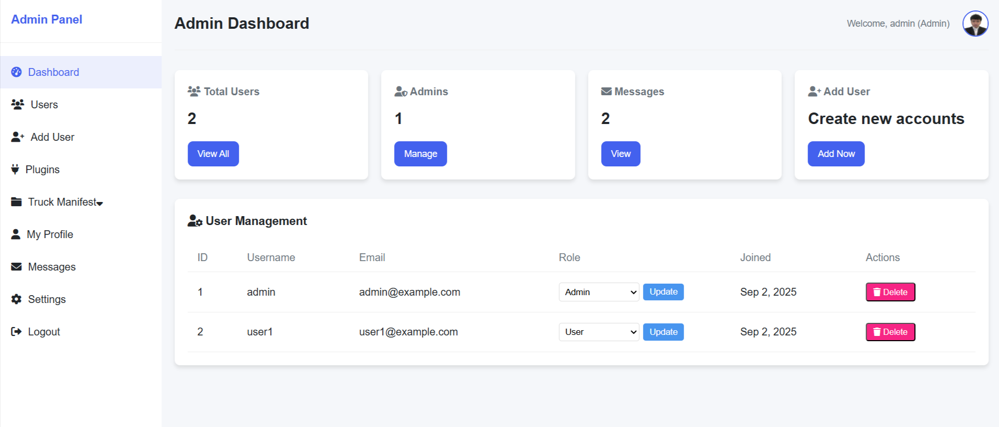

Web & Interface Design
I design and implement responsive, high-performance web interfaces that combine clean visuals with intuitive user workflows. Every interface is built to function flawlessly across desktop, tablet, and mobile devices.
Web Design Capabilities
Responsive Web Design
Mobile-first layout development ensuring seamless readability, touch targets, and fluid grid scaling across all screen resolutions.
Custom Dashboard Layouts
Designing role-based client and staff dashboards with intuitive sidebar navigation, status cards, and accessible data tables.
Map & Directory Interfaces
Custom Google Maps UI styling, interactive polygon drawing controls, radius search sliders, and dynamic property markers.
Custom Block Interfaces
Building editable Gutenberg and ACF block controls that allow content editors to manage complex layouts without touching code.
Real Web Design Implementations
Vaze Realty Platform Interface
Challenge: Presenting complex property search filters, MLS disclaimers, map drawing tools, and agent subdomains in a clean, non-cluttered interface.
Solution: Developed custom floating map filter controls, responsive property card grids, and protected dashboard views for agents and clients.


SalesCreator PropTech Widgets
Challenge: Displaying auto-scrolling property data feeds and pricing tiers cleanly on mobile screens.
Solution: Designed hover-pause listing tickers, touch-friendly pricing sliders, and integrated Stripe payment modal triggers.
Need a Custom Web or Dashboard UI?
I can design and implement a responsive, high-performance UI tailored specifically to your WordPress application.
Get in Touch